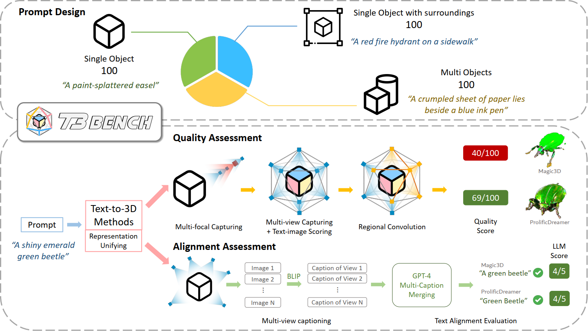

Recent methods in text-to-3D leverage powerful pretrained diffusion models to optimize NeRF. Notably, these methods are able to produce high-quality 3D scenes without training on 3D data.
Due to the open-ended nature of the task, most studies evaluate their results with subjective case studies and user experiments, thereby presenting a challenge in quantitatively addressing the question: How has current progress in Text-to-3D gone so far?
In this paper, we introduce T3Bench, the first comprehensive text-to-3D benchmark containing diverse text prompts of three increasing complexity levels that are specially designed for 3D generation. To assess both the subjective quality and the text alignment, we propose two automatic metrics based on multi-view images produced by the 3D contents. The quality metric combines multi-view text-image scores and regional convolution to detect quality and view inconsistency. The alignment metric uses multi-view captioning and Large Language Model (LLM) evaluation to measure text-3D consistency. Both metrics closely correlate with different dimensions of human judgments, providing a paradigm for efficiently evaluating text-to-3D models.
The benchmarking results reveal performance differences among six prevalent text-to-3D methods. Our analysis further highlights the common struggles for current methods on generating surroundings and multi-object scenes, as well as the bottleneck of leveraging 2D guidance for 3D generation.
| # | Method | Average | Single Obj. | Single with Surr. | Multi Obj. |
|---|---|---|---|---|---|
| 1 | ProlificDreamer | 43.3 | 49.4 | 44.8 | 35.8 |
| 2 | Magic3D | 32.7 | 37.0 | 35.4 | 25.7 |
| 3 | LatentNeRF | 28.1 | 33.1 | 30.6 | 20.6 |
| 4 | Fantasia3D | 24.0 | 26.4 | 27.0 | 18.5 |
| 5 | DreamFusion | 21.7 | 24.4 | 24.6 | 16.1 |
| 6 | SJC | 18.7 | 24.7 | 19.8 | 11.7 |
*The scores above are the average of the two metrics (quality and alignment) in 0-100.


There is somehow a BibTeX 114514